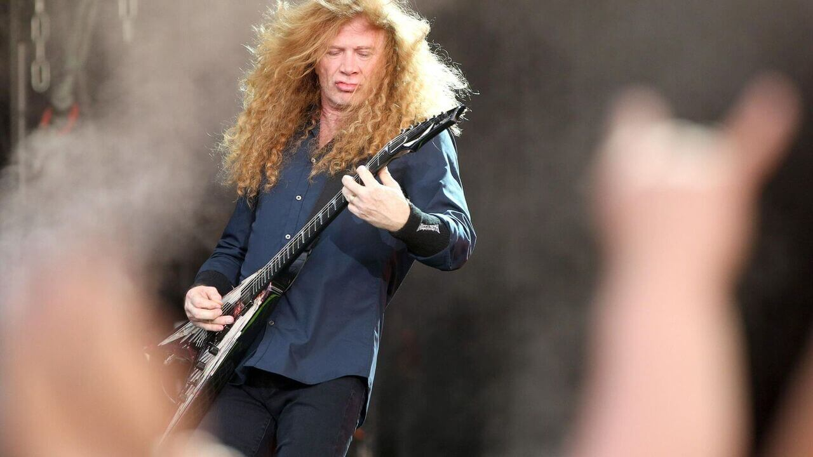
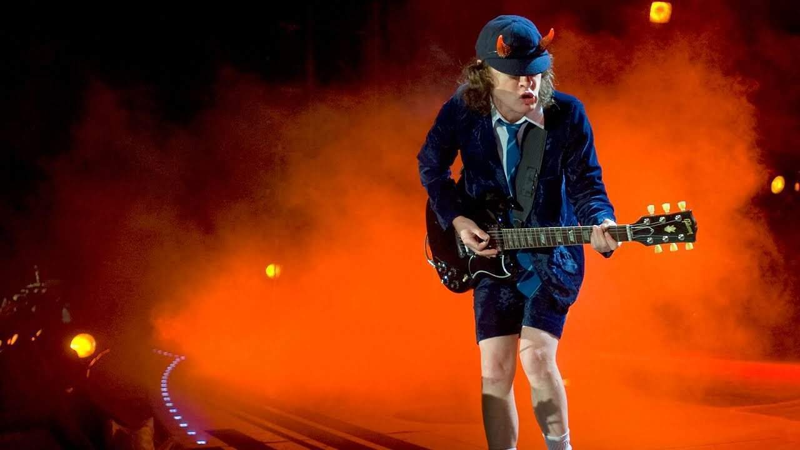

¿Conoces la historia del Metal?
Algo de historiaHeavy Metal
El heavy metal, o simplemente metal (pronunciado como métal — en español traducido literalmente como « metal pesado » —), es un género musical que nació a finales de los años sesenta y principios de los setenta en el Reino Unido y también en los Estados Unidos, cuyos orígenes provienen del blues rock, hard rock y del rockpsicodélico.
Se caracteriza principalmente por sus guitarrasfuertes y distorsionadas, ritmos enfáticos, los sonidos del bajo y la batería son más densos de lo habitual y la voz es generalmente aguda o gutural.
Thrash Metal
El thrash metal es un subgénero más agresivo del heavy metal tradicional que se caracteriza específicamente por sus ritmos pesados similares al metal extremo, NWOBHM, speed metal, biker metal y hardcore punk en agresividad y contundencia.
Las canciones del género suelen utilizar percusión rápida y un bajo registro de riffs de guitarra, los cuales suelen ser así mismo rápidos y cortantes. Las letras de las canciones de thrash metal a menudo se enfrentan con los problemas sociales, en muchas ocasiones con un lenguaje directo y de denuncia.
Hard Rock
El hard rock, es un subgénero definido de la música rock surgido a mediados de la década de 1960 a partir de los movimientos del garage, el blues y el rock psicodélico. Se caracteriza por el uso de letras agresivas con guitarras eléctricas distorsionadas, un bajo, batería y, en ocasiones, teclados.
Dentro de sus orígenes e influencias se pueden mencionar estilos y géneros como el rock and roll clásico, blues rock, garage rock, rock psicodélico y música folk pero, desde diferentes puntos de vista, fue eliminando elementos externos y se constituyó como identidad propia.